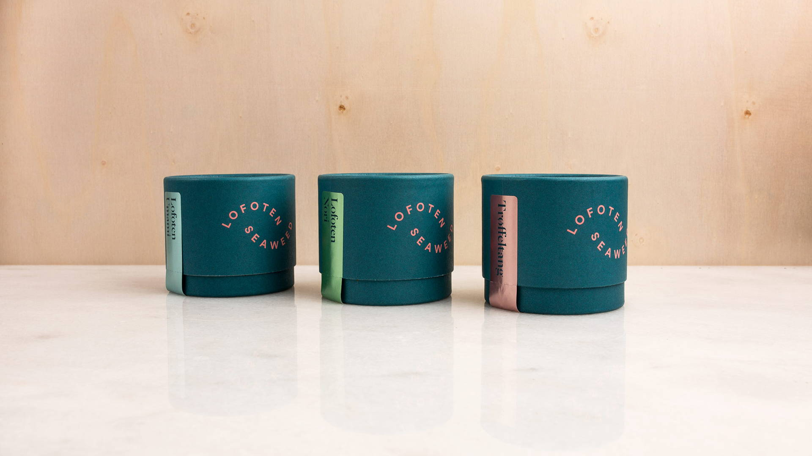
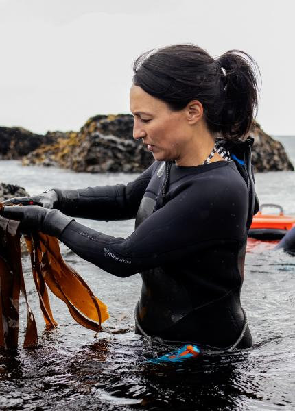
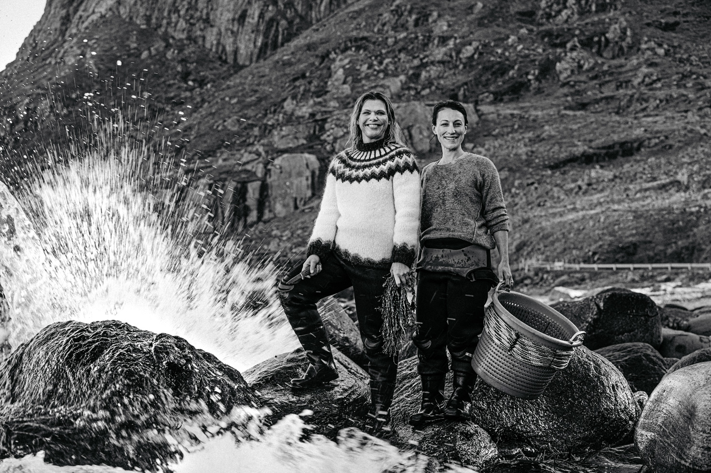

Peter Ralph is a distinguished academic and research leader in the fields of algae bio-systems and biotechnology, seagrasses, and the adaption of aquatic plants to warming and acidifying oceans. He is Executive Director of the Climate Change Cluster at University of Technology Sydney and founder of the NSW Deep Green Biotech Hub.
The New South Wales Deep Green Biotech Hub brings together researchers, SMEs, industry, start-ups, students and other stakeholders to bring NSW to the forefront of algae-based biotechnology innovation in Australia.
In this edited conversation with Peter Green, Peter Ralph spoke about Deep Green Biotech Hub and future perspectives on the seaweed industry.

Why did you create Deep Green Biotech Hub
It was an opportunity to fast-track innovation. I've seen around the globe that moving green technology into industry start-ups and SME's has a big barrier in the shape of technology. Progress is slow because start-ups have to buy a lot of kit, invest and know that their efforts will work out.
I realised that the university was well placed to help because they have a lot of that infrastructure. It was a matter of creating a hub that would bring together the innovators, the entrepreneurs, the SMEs, the students and the technology without imposing on intellectual property (IP). So, with Deep Tech Biotech Hub the IP does not belong to the university. The IP belongs to the start-ups. We have to be able to differentiate research contract from supporting innovative new start-ups.
It's called Deep Green Biotech Hub for a reason, not just the "Green Biotech Hub". A Deep Tech Hub is a hub that has kit and infrastructure, not just smarts and intellect.

What have been some of the biggest challenges you’ve encountered with the hub?
Over four years the hub has attracted and grown the algal industries in New South Wales and also influenced the rest of Australia.
The challenge is ensuring its continuity. The government has funded it for the past four years, and we look forward to ongoing funding. Understanding which groups are able to support it is an important part of the organisation. For example, we have also had support from some philanthropic groups with banking organizations.
Keeping the funding is a challenge, but beyond that, the people that want to work in the hub are fantastic. They're always, they're always very pleased to be able to to talk to a bunch of seaweed and algae nerds and to run their ideas past them and ask whether their idea is crazy or not. They've got that opportunity.

Are there any trends with the problems coming out of the start-ups from your hub?
?
The start-ups come into the hub with a lot more commonality. Currently, there's more there's more interest in macroalgae than microalgae which might be linked to current knowledge in the general public or awareness. I think there's a slowly being a shift in focus at the moment.
We've seen all kinds of different interests in macro and micro algae including a flurry of food based and fashion groups come through. When they come out, they're well-versed in what their product is, they understand how to get their MVP’s developed, they’ve learned about pitches, learned about their market and they’re ready to start their journey.
Where do you see the trend of seaweed in industry going in the next 5-10 years?
Definitely to microalgae, but currently it's dominated by macroalgae. The industrial opportunities will push a greater diversity of products that can come from microalgae. Macroalgae he has a certain range of compounds that can be exploited, and they're not completely exploited yet, but they will be quite quickly. I think microalgae offer an immense immensely larger biochemical larder to choose from. I think there will be an evolution.

How does public interest drive funding from investore or charities?
Investors are looking for products and they looking for reasons why macro or micro could deliver a product that I'm interested in. On the other hand, philanthropy appears to be moving very rapidly in the space of decarbonisation and sustainable, circular economies.
That's a different kind of market and there's increasing interest in those in that space. Yeah. So that I think they are going in different directions because one is driven by “what can the algae give me” as opposed to what service can the algae provide to the planet, to society, to my country and you can have two different products from the same organism.
What motivated you to pursue research in seagrass dredging and sensors, diagnostics and cultivation systems of algae?
I did my PhD in seagrasses 30 years ago and I've always maintained an interest and activity in seagrasses and there's a lot of opportunities for blue carbon in the sea grass world. I've spent the last 10 years working on blue carbon but I made an active decision that microalgae and macroalgae were vehicles by which greater influence on sustainable practices in society could be made than seagrasses. Seagrasses have to be protected, seagrasses will be protected but active processes to decarbonise the atmosphere are not going to immediately be delivered by sea grass and blue carbon habitats. We can't scale them up quickly enough and we can't grow them quickly enough.

What’s next for you and the team at Deep Green Biotech Hub?
Next is continuing to grow the industry and to see more opportunities. We’re looking forward to the next rounds of Green Light which is an accelerator program dedicated to supporting the development of algae biotech solutions . Each time we offer green light, there's a broader and more exciting cohort of people that hear about it and I hope there's people in the wings that are preparing their ideas and ready to get involved.
What advice would you give to your younger self?
Be bold and start quickly because I think the clock's ticking and the solutions are out there and we need to ensure that that transition happens quickly. Society needs to see what's possible. They know what they want to happen and and we move quicker. So yeah, that would be my advice to myself to move quicker than I did but that's how I move once I made that realization.
Are there any books you might recommend to others involved in entrepreneurship in this space?
I’ve read a lot of Simon Sinek’s books. They’re the ones which have given me a lot of insights into leadership and how to influence. In a lot of ways, you shouldn't treat a university position or a university role as being a siloed academic position. We’re part of society, where by running an Institute, I'm running a small business and I need to be able to have the same leadership skills as somebody working in industry and not just think of myself as an academic. So they are a lot more of the books that I read but they're less about biological Solutions. One book that I did read that was very influential is Ross Garnat’s super power. That's a book about energy systems and one of the biggest problems with algae and the bioeconomy is Energy. If we can link, sustainable energy sources to microalgae we're going to solve the problem because 40% of the cost of any algal product is harvesting and electricity. So if we can get sustainable sources of electricity that are not fossil-based, we can transform this industry. So Ross Garnaut’s book was great for economics of energy.